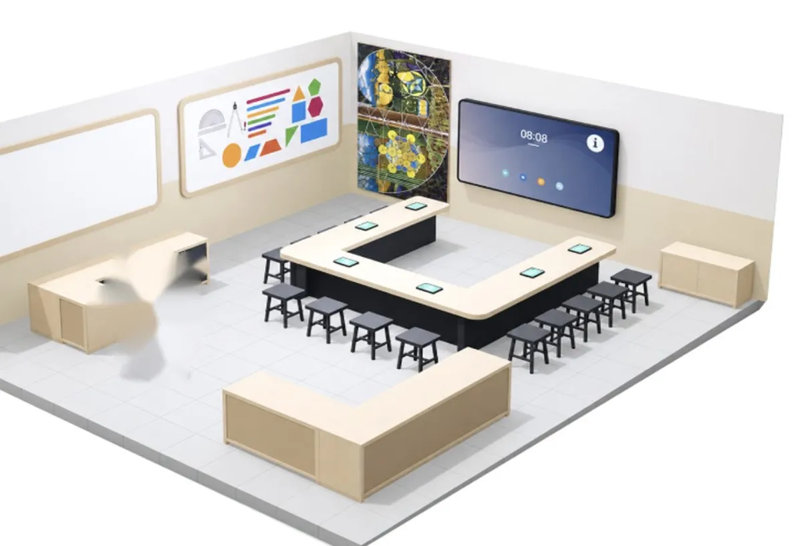
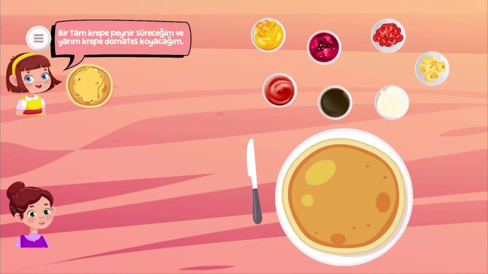
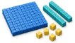
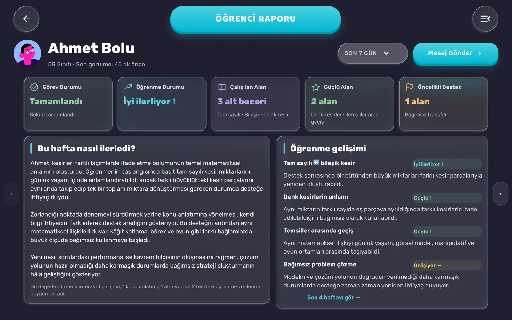

Matematiği yalnızca çözme. Deneyimle.
Fiziksel matematik atölyesi, öğretmen rehberliği ve Atomica’nın etkileşimli dijital öğrenme deneyimi aynı ortamda. Atölyede başlayan öğrenme, Atomica’da yeniden deneyime dönüşür.

Temsili görselAtölyeyi farklı kılan ne
Dokunarak öğren
Kesir daireleri, onluk bloklar gibi materyallerle matematiksel fikirler elle denenir.
Oyunla pekiştir
Atölyede kurulan anlam, Atomica’nın etkileşimli içerikleri ve 2D/3D oyunlarıyla yeniden yaşanır.

Doğru anda doğru destek
Öğretmen, her öğrencinin ilerleyişini görür ve takıldığı yerde destek olur.

Öğrenme görünür olur
Öğrencinin yalnızca ne yaptığı değil, nasıl ilerlediği de öğretmen panelinde izlenir.

Bir atölye dersinin akışı
- KeşfetDers bir soruyla başlar; amaç cevabı göstermek değil, düşünmeyi başlatmaktır.
- ÖğrenÖğrenciler materyallerle dener, farklı yolları birlikte tartışır.
- UygulaKurulan anlam yeni problemlerde kullanılır.
- PekiştirAtomica’nın dijital oyunlarında aynı fikir yeniden yaşanır.
- ÖlçÖğretmen panelinden ilerleme izlenir, sonraki ders buna göre şekillenir.
Tanıtım videosu
Video eklenecek
Hızlı bakış
5. sınıf matematik odağında. 4. sınıf da var mı?
Küçük gruplar. Grup mevcudu eklenecek
Kontenjan, gün ve saat eklenecek
Kesir daireleri, onluk bloklar ve atölye materyalleri
Atomica’nın etkileşimli içerikleri, 2D oyunları ve konuya özel 3D dünyaları
Öğrencinin gelişimi öğretmen panelinden izlenir. Veliye paylaşım şekli
Atölyeyi deneyimleyin
Deneme dersi için gün ve saat bilgisi alın.